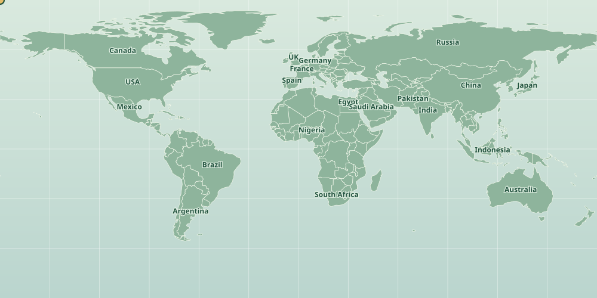

Seasonal rainfall
Total water arriving between April and September, in millimeters. Compare it against this location's historical average and look for unusually dry years.
Load a location to compare with the 10-year average.
Explore a location's rainfall, growing-season heat, and dry spells. Learn what these patterns mean for farming and why protecting soil matters.
01 / FIND YOUR LOCATION
Search a city anywhere in the world, choose an example, or click a point on the map. Then explore its historical climate.

HOW TO INTERPRET THE LOCATION
There is no one perfect value for every farm. The best amount of rain or heat depends on the crops, soil, and growing stage. Use these measurements as context, not a universal pass-or-fail score.
Total water arriving between April and September, in millimeters. Compare it against this location's historical average and look for unusually dry years.
Days when the air temperature reaches at least 32°C (89.6°F). Fewer extreme-heat days generally mean less heat exposure, though crops tolerate heat differently.
Longest consecutive stretch of days with under 1 mm of rain. Shorter spells usually mean fewer prolonged rainless periods, but soil water storage also matters.
02 / WHAT THE DATA SHOWS
Explore location-specific historical patterns. Switch a chart to see how the same place changes through time.
NASA POWER / HISTORICAL WEATHER
April–September seasonal totals, 2016–2025.
NASA POWER values are regional estimates rather than readings from a specific field.
View NASA POWER data source ↗WHAT THE CHART MEANS
Compare one year to the average for the same location. Changes between years reveal variability, not necessarily a long-term trend.
IMPORTANT CONTEXT
Rainfall and heat do not determine field-level soil fertility, irrigation needs, or crop yields on their own. Check local soil information and agricultural expertise.
WEATHER DATA ≠ FIELD SOIL TEST03 / BELOW THE SURFACE
Climate observations are regional, but the texture and structure of a real field need a local soil survey or measurements.
SOIL CHARACTERISTICS
A local survey is needed to identify the actual texture.
Open USDA Web Soil Survey ↗WHAT SATELLITES CAN AND CAN'T TELL US
Regional historical conditions from NASA POWER. They help us understand weather exposure and seasonal variability.
Satellite indices show vegetation greenness, but not whether a field has fertile soil. A reliable field-scale map requires quality-controlled observations and a matching field boundary.
Regional moisture products are much coarser than an individual farm. Soil texture, infiltration, and nutrient status require local sources or tests.
NEXT / FROM INSIGHT TO ACTION